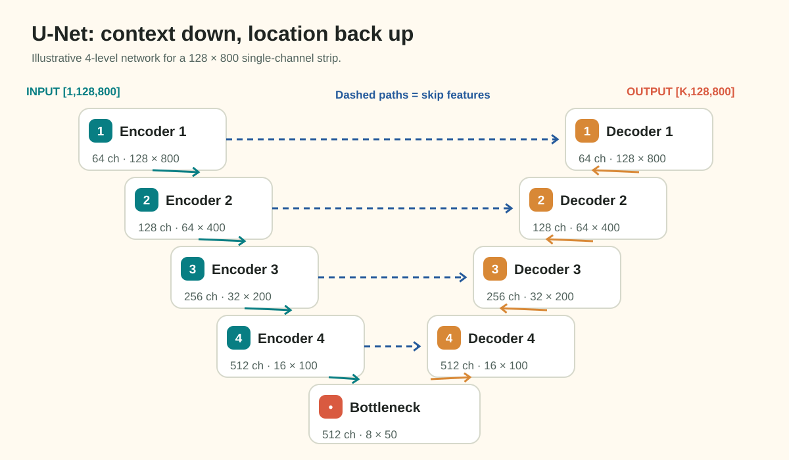

Feature Map Spatial Geometry & Downsampling Arithmetic
(Milestone 3 · Question 1 Study Guide)
1. Why Keep the Strip Geometry?
The competition images are height × width \(128 \times 800\). Resizing them to a square changes horizontal and vertical distances by different factors, which distorts defect shapes. Keep the native dimensions for this assessment. Downsampling inside a model is a separate operation: it reduces feature resolution while increasing channels and context.

This conceptual diagram illustrates skip fusion. Q1 defines its own four pooling stages; the SMP models used in Q2 use five encoder stages by default. Do not infer Q1's bottleneck from another model's diagram.
2. Compute Shapes from the Actual Operator
For dilation 1, a pooling or convolution output dimension is:
With MaxPool2d(kernel_size=2, stride=2, padding=0, ceil_mode=False), this becomes \(\lfloor D_{in}/2\rfloor\). A Conv2d(kernel_size=3, stride=2, padding=1) instead gives \(\lceil D_{in}/2\rceil\). They agree on even inputs but differ on odd inputs. Q1 explicitly uses the floor-pooling rule.
For dimensions divisible by \(2^n\), \(n\) such pooling stages reduce each axis by \(2^n\) and area by \(4^n\). This is a sampling-area ratio, not the receptive field: stacked convolutions can make a feature depend on a much larger input region.
Practice with Different Dimensions
Consider a fictional \(96 \times 640\) tensor and three pooling stages:
| Stage | Height | Width |
|---|---|---|
| Input | 96 | 640 |
| Pool 1 | 48 | 320 |
| Pool 2 | 24 | 160 |
| Pool 3 | 12 | 80 |
The area ratio is \((96\cdot640)/(12\cdot80)=64\). Repeat this procedure with the assessment's dimensions and stage count yourself.
3. Skip Mismatch and Full-Canvas Deficit Are Different
A U-Net decoder concatenates a decoder tensor with an encoder skip at the same spatial resolution. torch.cat(..., dim=1) allows channel counts to differ, but batch, height and width must agree.
Use a different toy width of 643 and three pooling stages:
Doubling the bottleneck gives 160, which matches the first skip. Doubling again gives 320, which disagrees with the next skip of width 321. A decoder with no alignment stops at that concatenation. Blindly multiplying the bottleneck by \(2^3\) gives 640, a full-canvas deficit of 3; that is not the mismatch at a particular skip.
Common alignment choices include padding the input, cropping a skip, or interpolating to the skip's explicit size:
import torch.nn.functional as F
# In a decoder that intentionally aligns to the skip:
upsampled = F.interpolate(decoder, size=skip.shape[-2:], mode="bilinear", align_corners=False)This fixes tensor shape, not lost image detail. Q1 instead asks about the first decoder skip, immediately after the bottleneck is doubled, before any cropping, padding or interpolation-to-size.
4. Practice Check
Why do the two stride-2 operators disagree at an odd width?
For a toy width of 101, floor pooling produces 50 while a padded 3-tap stride-2 convolution produces 51. Substituting the padding and kernel values in the general formula explains the difference. Always trace the operator used by your model.
5. Guiding Hints and Assignment Task
- Read Question 1.
- Trace both axes through the four specified pooling operations.
- For the odd-width input, keep every intermediate width. Compare the Stage 3 skip width with twice the Stage 4 bottleneck width. Stop before alignment; do not substitute a full-canvas deficit.
- Divide input area by bottleneck area for the native even-sized strip.
- Report
H_bottle, W_bottle; first_skip_mismatch_px; downsample_factor.